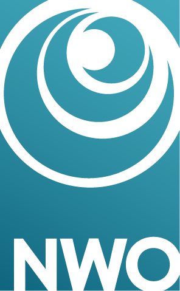

By speaking we undertake commitments. When we say to a friend 'I'll pay tonight' we take on the commitment to pay that night. Asserting 'The earth is flat' commits us to the truth of the content that the earth is flat. And, at the level of word choice, if we say 'She is black' we become committed to the appropriateness of the word 'black'. In our everyday life, however, we also often want to 'put something on the table' without becoming committed to it. A prominent way of doing so is to say that someone else said it ('Some say it's exploitative'). Journalists and politicians make smart and extensive use of this option to influence general opinion. By attributing commitments to others, we reduce our own commitments but still put something on the table for others to react to.
 The central aim of the project Commitments in Communication, funded with an NWO Open Competition M grant, is to deepen our understanding of how we undertake, attribute and avoid commitments through language. The project focuses on the role of the addressee and on different linguistic techniques of lowering our commitments. To contribute to these and related issues we have developed an empirical method to gather reliable data on the assignment of commitments in discourse. The method makes use of facial electromyography or fEMG, the recording of facial muscle activity. More about this method can be found under 'method'.
The project is a joint enterprise of the Department of the Philosophy of Mind and Language (Center for Cognition, Culture and Language, Faculty of Philosophy, Theology and Religious Studies) and the research group Grammar and Cognition (Centre for Language Studies, Faculty of Arts) at Radboud University Nijmegen.